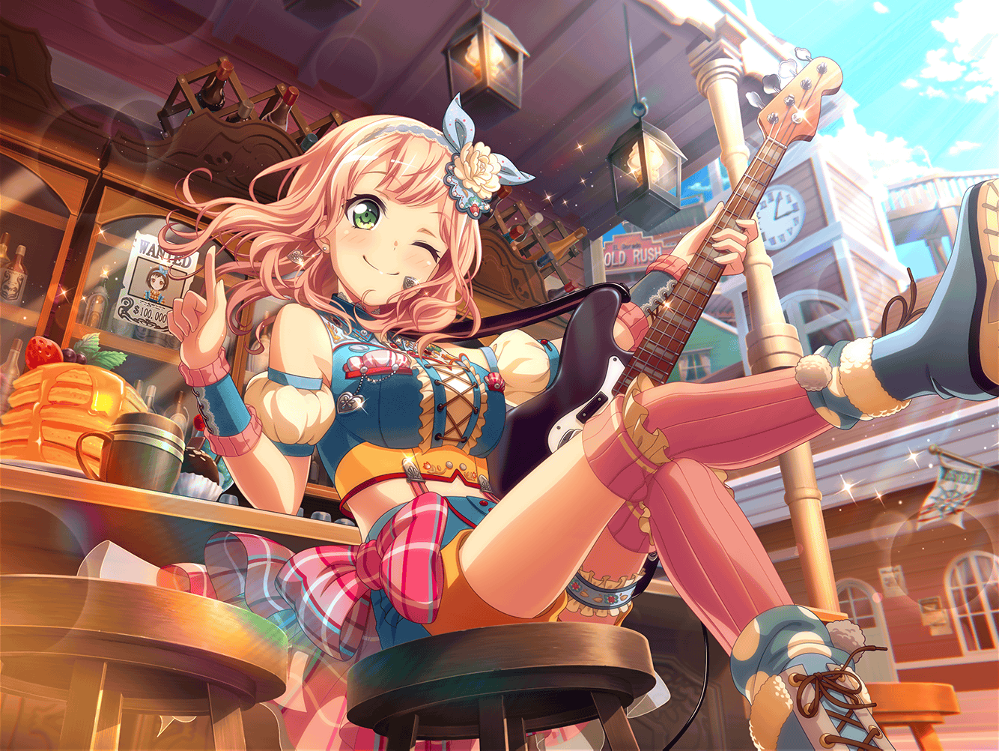

CiRCLE カフェ
ひまり
あ、新しいコメントついてる！
えーっと、なになに〜？
まりな
ひまりちゃん、何してるの？
ひまり
ひゃっ！ まりなさん！？ と、{{userName}}さん！
ひまり
もぉ～、人のスマホをのぞき見しちゃダメですよ〜！
まりな
ごめんごめん、あんまり熱心に見てるから
何してるのかと思って
ひまり
SNS見てたんです。
この前、みんなと一緒に井ノ島行った時の写真を
載せたら、クラスの子からコメントがついてて♪
ひまり
せっかく反応してくれたんだし、他の写真も載せようかなって！
海と水族館の写真は載せたから
あとはパンケーキの写真を載せたいんですけど……
ひまり
そうだっ！ {{userName}}さん！
まりなさんと一緒に選んでくれませんか？
まりな
私達が選んでいいの？
ひまり
はいっ！ 客観的な意見がほしいなって。
２枚まではしぼれたんで、どっちがいいか見てください
ひまり
まず１枚目がこの写真！
店員さんが運んできてくれたばっかりの
できたてホヤホヤのパンケーキの写真です
まりな
わあ……！ おいしそう！
ひまりちゃん、食べ物の写真撮るのうまいね！
もう１枚は……これ？
まりな
クリームが、ちょっと溶けちゃってるね
ひまり
そう！
そうなんです、この写真のポイントは
そこなんですよー！
ひまり
クリームが少し溶けてることによって
逆にパンケーキの温かさが伝わると思いませんか？
ひまり
そういう、なんていうんだろう？
ある意味動きのある写真だから
こっちの方がいいかなーと思う部分もあって
まりな
もしかして、この写真を撮るために
食べないで待ってたの？
ひまり
はい！ めったに来られる場所じゃないし、
せっかくならいい写真撮りたいな〜と思って
ひまり
……って、もぉ〜！
２人してそんな顔しなくてもいいじゃないですか〜
まりな
だ、だって……なんか、最近の若い子は
すごいな〜って思って……
ひまり
せっかくならいい写真をみんなに共有したいなって
だけですよ〜
まりな
そっか……で、このパンケーキ、おいしかった？
ひまり
はいっ！ このクリーム、写真ではてんこもりに見えるけど
食べてみると全然しつこくなくて。すっごくおいしかったです！
ひまり
でも……
まりな
でも？
ひまり
写真撮ってたら、ちょっとだけ冷めちゃって……
それは、ちょっと反省してます
まりな
あ、あはは……
ひまり
２人共、また同じ顔してますよ……
言いたいことは、だいたいわかります……
まりな
う、うん……でもいい写真だとは思うよ！
すごくおいしそうだし！ ね、キミもそう思うでしょ？
ひまり
次はちゃんと、冷めないうちに食べますから……
そんな顔で私を見ないでください〜〜！